Reducción de Complejidad
En esta unidad aprenderemos los conceptos detrás de la reducción de complejidad de un sistema de visualización. Podríamos pensar que esto se refiere a diseñar visualizaciones minimalistas, pero no es necesariamente así. Cuando hablamos de reducir complejidad nos referimos a facilitar el trabajo de quien deba realizar tareas complejas, cuyos datos sean difíciles de abstraer visualmente. Esto podría ser por el tamaño de los datos, no necesariamente en volumen de observaciones, sino que en volumen de atributos y relaciones; o bien porque la tarea a realizar es multivariada y necesitamos más canales que los disponibles para poder representar lo necesario para resolverla.
Veremos las cuatro estrategias principales para reducir complejidad:
- Derivar datos: convertir un dataset desde un tipo (tabla, red, geografía, etc.) a otro que sea más directo o simple de manejar para la tarea a resolver.
- Reducir la cantidad de datos: transformar los datos de modo que tengan menos dimensiones pero mantengan las propiedades necesarias para la tarea a resolver.
- Organizar los datos y las visualizaciones a través de facetas: dividir los datasets en diferentes perspectivas o categorías llamadas facetas, y visualizar en paralelo cada faceta. Una especie de dividir-para-conquistar en visualización.
- Manipular la visualización de manera interactiva: utilizar herramientas interactivas para actualizar o modificar la codificación visual.
A continuación definiremos y ejemplificaremos cada una de estas estrategias. Comencemos.
Derivar Datos
Desde un punto de vista filosófico, todo dataset es derivado, pero en esta ocasión nos referimos al acto de transformar un dataset en uno distinto, que puede ser más ad-hoc para la tarea a resolver. Es un dataset distinto pues se transforman valores o estructura, a pesar de que lo contenido en él sea equivalente.
¿Por qué haríamos esto? Porque a veces lo más directo es calcular una métrica derivada a visualizar. No es necesario que muestres los datos tal cual los recibes, o que muestres todo lo que tengas. El siguiente ejemplo muestra como una simple derivación puede hacer responder directamente la evolución del balance de las importances de un país:
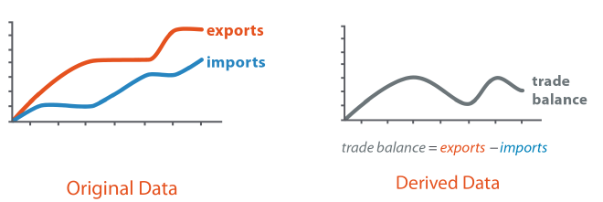
Fuente: Visualization Analysis & Design.
Si la tarea se enfoca en el balance, no necesitamos mostrar los datos originales. Es más, si queremos comparar períodos, no usar el balance dificultará la tarea porque la diferencia entre exportaciones e importaciones no tendrá la misma base para cuantificar la diferencia entre ambas curvas. Si quisiéramos estudiar las tendencias en las importaciones y exportaciones, entonces sí necesitamos desplegar los datos originales.
Ahora bien, ¿existen ejemplos reales de derivación de datos? En la próxima unidad veremos visualización de texto, que, en esencia, se compone principalmente de datos derivados que permiten convertir el texto (que no es estructurado) en un dataset que cumpla con la estructura necesaria para la tarea a resolver. El siguiente ejemplo convirtió un conjunto de documentos en una red bipartita que permitió entender cómo se agrupan las palabras de cada documento en temáticas:
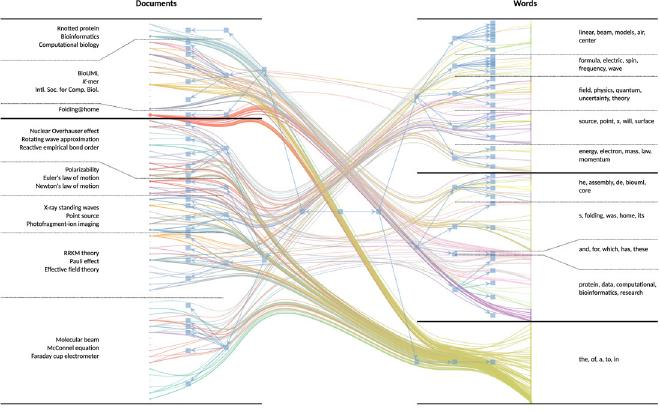
Fuente: M. Gerlach, T.P. Peixoto, & E.G. Altmann. A network approach to topic models.
Así, al tener una red derivada desde el texto, es posible responder preguntas sobre su topología y composición: ¿cuáles documentos son similares entre sí?¿cuáles palabras tienden a aparecer en los mismos documentos?, entre otras.
Reducción Dimensional
La reducción dimensional busca encontrar una representación más compacta de un dataset, estimando un conjunto de nuevas características para cada observación/ítem/fila del data set. A diferencia de la derivación de datos, estas técnicas no cambian la estructura que estemos utilizando. Por ejemplo, la reducción dimensional de un dataset tipo tabla sigue siendo una tabla, pero con menos columnas. La estrategia de cálculo o selección de las columnas que queden en el dataset reducido dependerán de la técnica utilizada.
Si bien la reducción dimensional es una técnica propia de Machine Learning, puede ser parte de un proceso de visualización. El siguiente proceso para clasificar documentos puede dividirse en tres tareas:
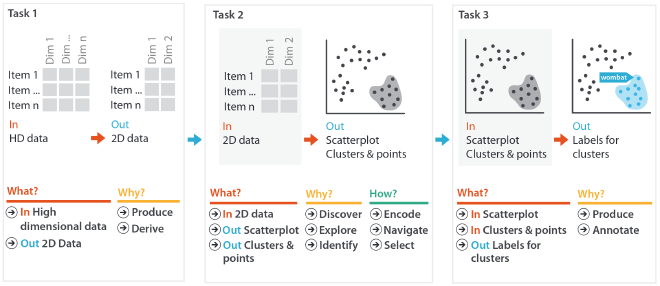
Fuente: Visualization Analysis & Design.
La primera subtarea es reducir la dimensión de los datos. Noten que pasamos de una tabla que tiene n columnas a tener solamente 2. La segunda tarea es identificar grupos de documentos de manera visual. Esto tiene dos requisitos, por un lado, el sistema debe ser interactivo, y la reducción dimensional debe mantener la similitud de dos documentos distintos (eso es algo que depende de la definición de similitud y de la técnica utilizada). El tercer y último paso es visualizar detalles de cada grupo elegido y ponerles una clasificación.
En general, las técnicas de reducción dimensional generan un conjunto de columnas donde los elementos que están cerca o son similares, mantienen cierta cercanía o similitud en la representación reducida. Esta cualidad hace que se puedan visualizar datasets utilizando representaciones familiares. El siguiente ejemplo visualiza algunos pajaritos de acuerdo a sus preferencias de alimentación. La variedad alimenticia de cada pajarito cubre hasta nueve fuentes distintas — es decir, la tabla de pajaritos tiene 9 columnas. ¿Cómo podemos visualizar esta tabla para identificar grupos de pajaritos que se alimenten de manera similar? Una solución es siguiendo el proceso descrito anteriormente: realizar reducción dimensional (con 2 dimensiones utilizando el método Independent Component Analysis), visualizar en un scatter_plot, agrupar elementos y etiquetarlos. El resultado luce así:
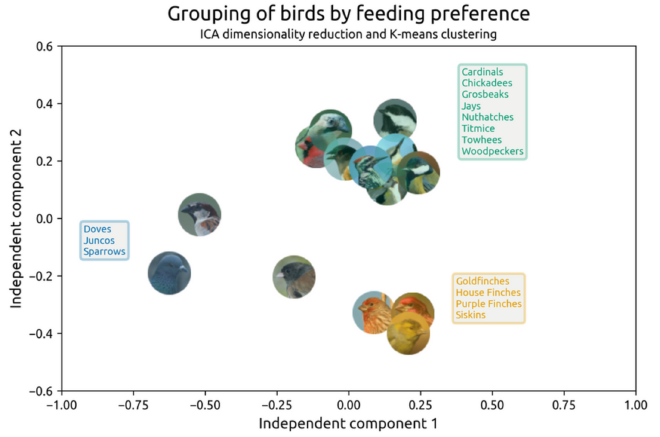
Un aspecto interesante de la reducción dimensional, evidenciada en esta visualización, es que los grupos resultantes no solo se alimentan de manera similar, también tienen similitudes biológicas, de elección de hábitat, y de comportamiento.
Reducción de Datos: Filtros Dinámicos
En un sistema de filtros dinámicos buscamos reducir la complejidad de la visualización al disminuir la cantidad de datos a trabajar dentro del sistema. A diferencia de la reducción dimensional, que se lleva a cabo antes de la visualización como una tarea previa, en esta sección la reducción es parte del sistema de visualización. La navegación en estos sistemas es fluída e inmediata, porque es más rápido buscar y encontrar visualmente que escribiendo o programando las consultas.
Usualmente los sistemas que utilizan el paradigma de una vista global primero, zoom y filtro, y detalles a medida que sean necesarios trabajan con filtros dinámicos. El sistema FilmFinder permite encontrar de manera visual una película que cumpla con nuestros criterios. Se basa en un scatter_plot que muestra la popularidad y el año de creación de las películas, como se ve a continuación:
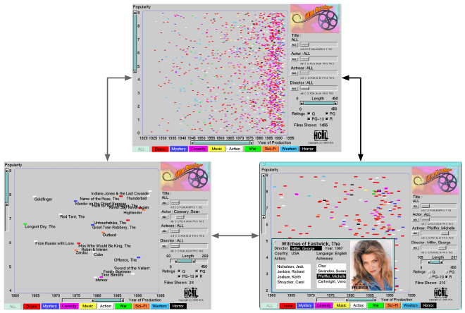
El sistema FilmFinder. Fuente: C. Ahlberg & B. Shneiderman. Visual information seeking: Tight coupling of dynamic query filters with starfield displays.
Por supuesto que la cantidad de películas es enorme como para desplegar datos de todas ellas. Por eso, a través de controles interactivos podemos definir criterios de búsqueda (por ejemplo, podría buscar una película de Michelle Pfeiffer que trate temas adultos). A medida que agregamos filtros, el scatter_plot se actualiza, quitando las películas que no cumplen con nuestro filtro. A partir de allí tenemos dos posibilidades: por un lado, podemos ver los títulos de las películas; por otro, podemos hacer clic en alguna que nos llame la atención y ver sus detalles.
En resumen, un sistema como FilmFinder utiliza una única visualización que va desplegando menos datos a través de filtros, de modo que solo quede en la visualización lo que es relevante para nuestra tarea.
Conceptos de Facetamiento
Una manera de reducir la complejidad es no mostrar todos los aspectos del dataset al mismo tiempo, en una misma visualización, sino proveer distintas perspectivas, cada una con su propia visualización. ¿Perspectivas de qué? De las facetas del dataset. Una faceta puede una categorización, un filtro, o incluso un dataset paralelo. Es un concepto general que se puede amoldar a las necesidades del proyecto.
El trabajo con facetas tiene tres grandes categorías de trabajo: yuxtaposición, partición, y superposición. Las tres categorías se ejemplifican en el siguiente marco conceptual:
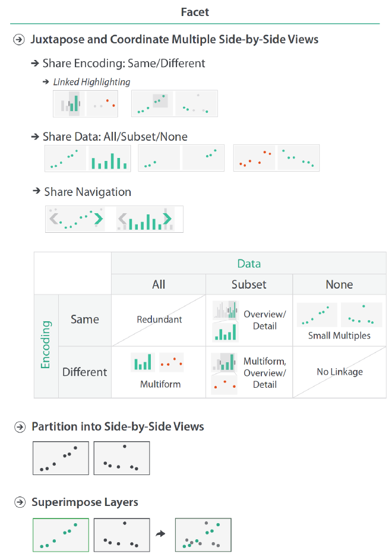
Marco conceptual de visualización de facetas. Fuente: Visualization Analysis & Design.
La yuxtaposición consiste en desplegar distintas visualizaciones y organizarlas en el espacio. Cada visualización es independiente de la otra, es decir, pueden contener distintos datos, o incluso tener distintas codificaciones visuales.
La partición consiste en tener vistas paralelas lado-a-lado utilizando la misma codificación visual para distintas facetas. En general las vistas paralelas no son independientes entre sí.
La superposición utiliza la misma codificación visual dentro de la misma instancia de visualización, es decir, dentro del mismo espacio en la pantalla. Superponer es utilizar la misma codificación visual y la misma instancia de visualización.
En estas tres alternativas debemos considerar que el espacio disponible para visualizar es el mismo. Entender los trade-offs de cada una para la tarea a resolver nos permitirá tomar una decisión.
A continuación veremos algunos ejemplos de cada tipo de técnica de facetamiento.
Yuxtaposición: Vistas Coordinadas y Selecciones Compartidas
Si tenemos un mismo dataset visualizado con múltiples gráficos, podemos utilizar la técnica de “vistas coordinadas” (coordinated views). En ella, las interacciones que realizamos en un gráfico afectan los datos vistos en los otros gráficos. El siguiente ejemplo muestra una splom (matriz de scatter_plot) donde las interacciones que tengamos en uno de los gráficos afecta a los demás:
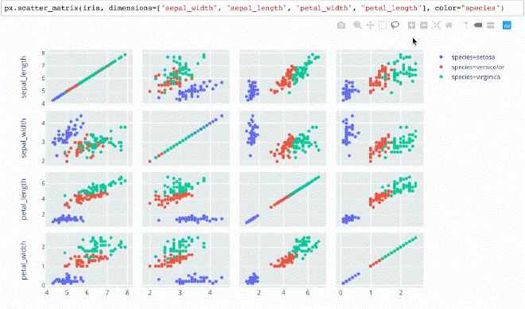
Vistas Coordinadas en una Scatterplot Matrix (splom). Fuente: Plotly Express.
En el caso de la splom, cada gráfico utiliza la misma codificación visual. Sin embargo, esa no es una restricción, ya que podemos tener múltiples gráficos, cada uno con su propia codificación visual o vista del sistema, y aún así coordinarlos por las acciones que realicemos. Ése es el paradigma conocido como “selecciones compartidas” (linked highlighting), donde destacamos un subconjunto de los datos en un gráficos, y vemos como ese mismo subconjunto se distribuye en los demas.
El siguiente ejemplo muestra este paradigma para visualizar el desempeño de los jugadores de una liga deportiva:
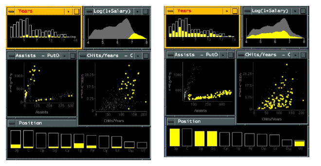
Selecciones Compartidas en múltiples visualizaciones. Fuente: G. Wills. Visual Exploration of Large Structured Datasets.
Cada gráfico muestra distintos atributos de los jugadores. En algunos se ve cada jugador de manera individual (en cada scatter_plot), en otros, se ven distribuciones de distintos atributos ordinales y cuantitativos. Elegir un subconjunto de jugadores en un gráfico, destacado con amarillo, destaca al mismo subconjunto en los demás gráficos. El dataset completo se sigue desplegando en cada gráfico, con un color gris, para entender cómo se diferencia el conjunto de jugadores elegido en comparación con el total.
Como un ejemplo más completo, el sistema Improvise lleva estos paradigmas al extremo al explorar los límites en torno a múltiples vistas y la complejidad de la interacción. El sistema luce así:
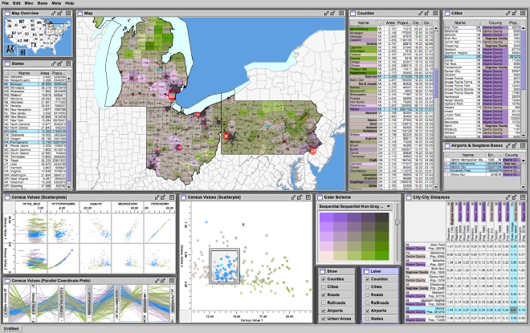
Improvise, un sistema de Vistas Coordinadas y Selecciones Compartidas. Fuente: C. Weaver. Building Highly-Coordinated Visualizations In Improvise.
En Improvise todo está conectado con todo. Además incluye elementos tradicionales como listas y matrices, que son fáciles de entender e interactuar. Estos elementos también están vinculados a las visualizaciones, por ejemplo, filtrar una lista también filtra lo mostrado en los gráficos correspondientes.
Yuxtaposición: Vistas Múltiples y Partición Lado-a-Lado
Otro estilo de yuxtaposición es la de múltiples vistas paralelas que utilizan la misma codificación visual, pero en distintas facetas del dataset, o incluso en distintos datasets. Este esquema es conocido como “pequeñas vistas múltiples” (small multiples). Hay un énfasis en pequeñas, porque así podemos mostrar muchas facetas simultáneamente, que podemos comparar gracias al uso de la misma codificación visual.
Un ejemplo reciente de esta técnica lo provee la siguiente visualización sobre el exceso de fallecimientos durante la pandemia de COVID-19, donde para cada país se compara el total de fallecides el año 2020 con años anteriores:
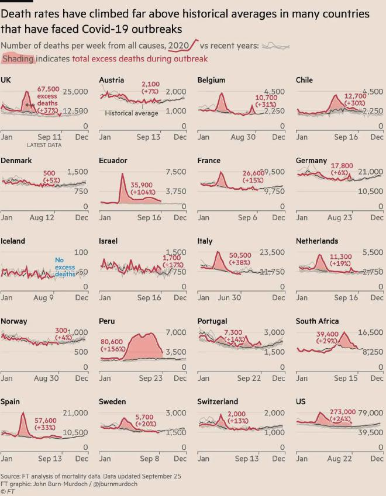
Exceso de muertes por país durante la pandemia de COVID-19. Fuente: Financial Times.
Noten que la visualización de cada país es en sí misma compleja: muestra múltiples series temporales visualizadas con line_chart, más distintos tipos de anotaciones. Si quisiéramos comparar todos los países en un mismo gráfico, el resultado sería inescrutable, porque la serie para el año 2020 necesita las de los otros años para ser entendida. Además, notamos que cada país tiene un eje y diferente, por tanto, países con mayor población dificultarían la identificación de tendencias en países más pequeños. En cambio, al desplegar cada país por separado, es directo trabajar con la visualización. Es una visualización efectiva y atractiva estéticamente.
Una pregunta a responder al hacer este tipo de organización de visualizaciones es cuánto mostrar. En el caso anterior no aparecen todos los países del mundo, sino que solamente aquellos que fueron determinados de interés por el criterio del autor del artículo que contenía la visualización. En la organización, los países fueron ordenados alfabéticamente. Entonces, ¿qué pasa si tenemos que mostrar más gráficos?¿Cómo los organizamos?
El siguiente ejemplo contiene múltiples gráficos
pequeños que describen el sonido del canto de cientos de pajaritos. La onda que representa el
canto de cada pajarito es visualizada con un line_chart. Utilizando un método de reducción dimensional de estas
ondas, se determinó su posición en un espacio de dos dimensiones — esa posición fue utilizada para organizar las ondas
en el espacio de la visualización. Así, dos ondas que estuviesen cerca son similares:
Small multiples es un paradigma utilizado frecuentemente en medios impresos o visualizaciones estáticas, pero, como muestra el último ejemplo, también se puede utilizar de manera interactiva.
Otro tipo de vista compartida es la partición lado-a-lado (o side-by-side). En general, este paradigma de partición organiza dos visualizaciones, cada una con la misma codificación visual, pero con facetas o datasets diferentes. Lo que la diferencia de small multiples es, por un lado, que no son visualizaciones pequeñas, sino que pueden ser grandes y con muchos controles para interactuar; por otro, el énfasis en la interacción se da con los parámetros de la visualización, que, además de una vista coordinada, pueden ser manipulados desde un lugar centralizado.
Para ilustrar esta definición veamos el siguiente ejemplo de la biblioteca Kepler.gl:
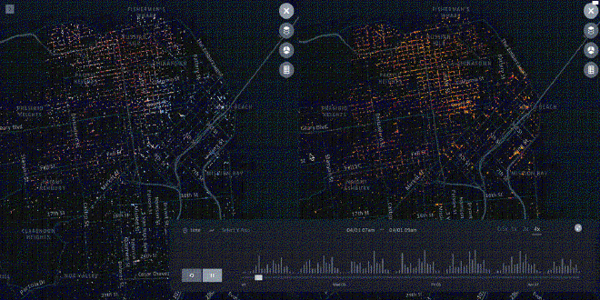
Fuente: Kepler.gl.
Esta visualización utiliza dot_map de manera paralela. Noten que cada dot_map reacciona ante los controles de la visualización de manera simultánea. Esta organización permite encontrar patrones geográficos en cada dot_map, y, al mismo tiempo, compararlos, por ejemplo, determinar si la forma de los clusters es la misma, si hay clusters exclusivos de una faceta, entre otras tareas.
Superposición de Visualizaciones
Hemos definido la superposición como el uso de la misma codificación visual en múltiples capas dentro del mismo espacio, donde cada capa muestra una faceta distinta de los datos. Esta definición es acotada, en tanto una definición más laxa permitiría utilizar codificaciones visuales diferentes. Por ejemplo, cuando hemos usado node_link sobre un mapa estamos superponiendo una visualización de red sobre una visualización de datos geográficos. Trabajaremos con la primera definición, ya que es la que nos permite definir cómo reducir la complejidad de un problema. Hasta este momento hemos visto muchas visualizaciones superpuestas, como en aquellos gráficos de line_chart donde una línea representaba a una categoría de los datos. Cada categoría era una faceta.
Para ejemplificar este concepto trabajaremos con redes. La siguiente imagen muestra dos tipos de yuxtaposición y una superposición de dos gráficos de red:
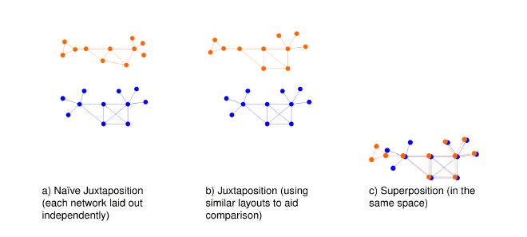
Comparación entre yuxtaposición y superposición de redes (vista parcial de una figura que contiene más comparaciones). Fuente: M. Gleicher et al. Visual Comparison for Information Visualization.
Como hemos visto, los gráficos node_link suelen calcular una organización (layout) para los nodos que suele ser única para cada visualización. Así, una yuxtaposición ingenua mostraría dos redes diferentes (a en la imagen). Si ambas redes tenían nodos en común, una yuxtaposición mejor consideraría eso al generar la red, de modo que cada gráfico node_link debiese generar una organización similar que facilite las comparaciones entre las dos redes (b en la imagen). Una superposición, que utiliza la misma organización, pero además el mismo espacio, facilita la comparación inmediata de diferencias en las facetas (c en la imagen).
El sistema Cerebral permite visualizar redes de interacción biológica con este esquema. Múltiples redes, con nodos en común pero diferentes entre sí, son desplegadas en el mismo espacio. Al hacer clic o poner el puntero sobre un nodo es posible ver de manera interactiva las redes en las que este nodo es relevante. Lo que no es relevante para ese nodo sigue desplegado en gris y en el fondo, como contexto:
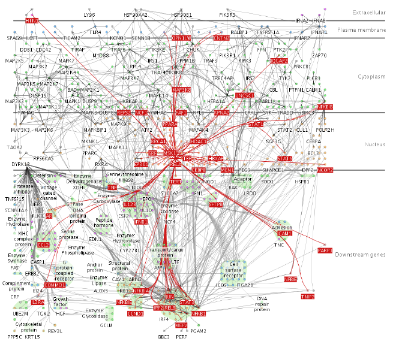
Sistema Cerebral. Fuente: A. Barsky et al. Cerebral: a Cytoscape plugin for layout of and interaction with biological networks using subcellular localization annotation.
Una visualización como ésta puede estar sobrecargada (clutter), lo que dificulta la interacción. Sin embargo, la interactividad nos permite movernos a través de las distintas capas de manera directa. Los órdenes de las capas pueden ser interactivos también si la tarea a resolver lo requiere.
Conceptos de Manipulación
Otra manera de reducir la complejidad es permitir que la persona elija qué ver a través de la interacción con el sistema. En las visualizaciones anteriores ya hemos interactuado con los sistemas, pero no habíamos enmarcado esas interacciones dentro de un marco común. A los mecanismos de interacción les llamamos manipulación, y están clasificados en los siguientes aspectos:
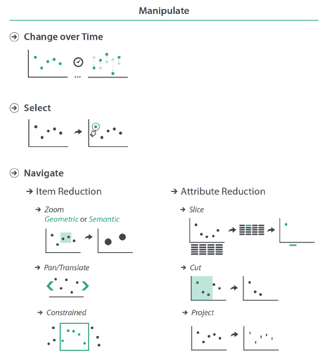
Marco conceptual de manipulación de visualizaciones. Fuente: Visualization Analysis & Design.
A grandes rasgos hay tres tipos de manipulación:
- Cambios en el tiempo, donde el sistema muestra transiciones desde un estado a otro en función de nuestras acciones y elecciones.
- Selección, especificando manualmente lo que nos interesa ver.
- Navegación, el sistema me permite elegir o alterar el punto de vista (como si fuese una cámara), o escoger los datos que se están visualizando a través de reducciones y cortes dimensionales.
Los sistemas que son fuertes en interacción, que permiten manipular cambios, selecciones, y navegar en profundidad, suelen pertenecer a un área de la visualización llamada Visual Analytics. En esta área, que une visualización y Machine Learning para generar conocimiento accionable para la toma de decisiones, la interacción con los datos también genera conocimiento que permite mejorar el entendimiento de los datos y el refinamiento de los modelos, a través de ciclos de realimentación:
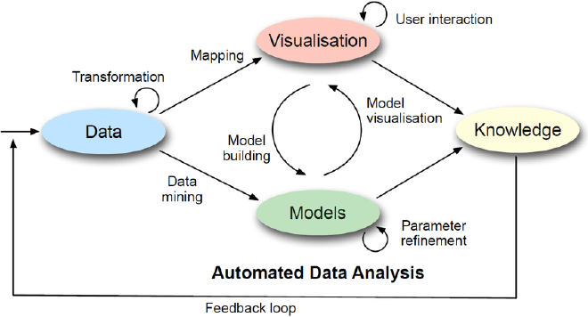
Visual Analytics. Fuente: https://visual-analytics.eu/faq/
En esta unidad no ahondaremos en Visual Analytics más allá de ver los ejemplos a continuación, ya que es más propio de un curso avanzado. Sin embargo, tener una noción de cómo estos procesos generan impacto en los proyectos de ciencia de datos sí es necesario a todo nivel. Nos enfocaremos en ejemplos de cambios en el tiempo, ya que en los sistemas vistos anteriormente hay mecanismos de selección y navegación.
Recodificación Visual como Cambio en el Tiempo
Cuando hablamos de recodificación visual nos referimos a que las marcas y canales de una visualización cambian o se actualizan producto de nuestra interacción.
El sistema Tableau ejemplifican este paradigma. Mediante clics en las opciones del programa y en las columnas de nuestros datos, podemos elegir y manipular la abstracción visual utilizada, por ejemplo, decidiendo ente un bar_chart a un bubble_map.
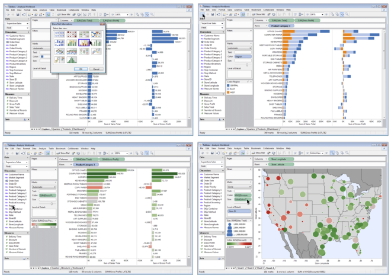
Distintas vistas en Tableau para los mismos datos.
Los principios de eficiencia y coherencia nos permiten elegir buenas visualizaciones para tareas bien definidas. Sin embargo, debemos recordar que la visualización será utilizada por alguien que quizás tiene un contexto cultural diferente, que no está familiarizade con la alternativa visual más efectiva, o que incluso tiene ciertas preferencias para marcas y colores (algo que se puede dar por estándares organizacionales). Entonces, poder elegir, configurar y poner a prueba una visualización a través de manipulaciones es una herramienta potente para poder llevar adelante un proyecto.
Tableau no es la única alternativa. Existen otras utilizadas a nivel industrial como Power BI de Microsoft y Qlikview. No tengo una recomendación sobre cuál es mejor, las tres son potentes y se pueden aplicar en contextos generales, a diferencia de la mayoría de los ejemplos que vemos, que son sistemas específicos.
Un tipo de gráfico que se beneficia de la manipulación en la codificación visual es el stacked_bar_chart. Como vimos en la unidad de tablas, esta visualización permite comparar partes-de-un-todo y comparar magnitudes entre distintas categorías, siempre que la categoría o faceta a comparar fuese la base de la pila de barras.
El sistema LineUp se construye sobre la premisa de trabajar con stacked_bar_chart para comparar instituciones educacionales en distintos rankings, y en las distintas facetas considerados por cada ranking. Luce así:
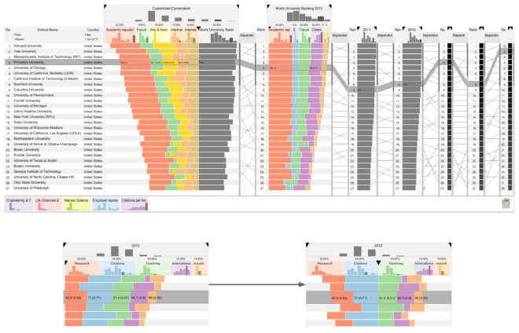
Sistema LineUp. Fuente: S. Gratzl et al. LineUp: Visual Analysis of Multi-Attribute Rankings.
Como observamos en la imagen, LineUp permite recodificar cada stacked_bar_chart de manera interactiva, cambiando la base a nuestra discreción, permitiéndonos hacer comparaciones eficientes entre las categorías que necesitemos comparar, no solamente la que era base inicial.
En LineUp cada institución tiene la misma importancia. Todas presentan la misma codificación visual, pero, ¿qué pasa si queremos cambiar la codificación visual para cada institución (o su equivalente en otro dataset)? Ese caso sería una recodificación más grande. Esa es la propuesta del sistema LiveRAC, que monitorea el estado de los distintos componentes de un sistema complejo (por ej., servidores, maquinaria, etc.). Quien utiliza el sistema puede priorizar componentes, de modo que las componentes con mayor importancia reciban mayor espacio en el sistema y tengan una codificación visual más detallada:
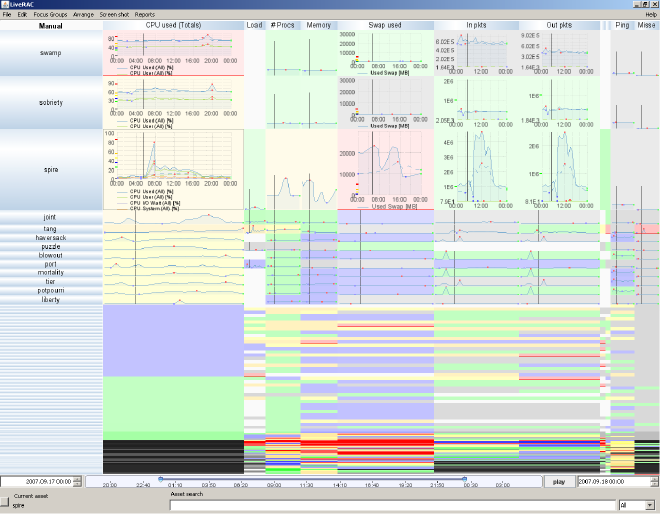
Sistema LiveRAC. Fuente: P. McLachlan et al. LiveRAC - Interactive Visual Exploration of System Management Time-Series Data.
Observamos que en LiveRAC las componentes más importantes del sistema se visualizan en la parte superior, con múltiples detalles en las visualizaciones. A medida que baja la importancia, baja el detalle de la visualización; ¡las menos importantes utilizan solamente un color para expresar un valor promedio! Cada visualización reacciona (se actualiza) ante los cambios en prioridad que pueda dar una operadora en el sistema. ¡Este tipo de flexibilidad solamente es posible gracias a la interactividad!
Conclusiones
Hemos iniciado esta sección pensando en cómo reducir la complejidad de un sistema para realizar tareas utilizando visualización. Hemos visto, también, que dichos sistemas son sumamente complejos: visualizaciones que reaccionan y se actualizan ante la interacción, organizaciones visuales complejas, algoritmos y modelos ejecutándose antes y durante la visualización, entre otros mecanismos. Implementar un sistema así es difícil, aprender a usarlo también, pues requiere entrenamiento. Vimos también que la reducción de complejidad puede darse en visualizaciones estáticas. La interactividad es potente; un buen diseño también lo es.
Quizás la lección final que podemos extraer de esta unidad es que una visualización efectiva puede ser la confección de técnicas conocidas, donde la interacción visual y la manipulación humana hace que el todo sea más que la suma de las partes. El resultado es una visualización que facilita resolver tareas, o que incluso permite hacer tareas más difíciles, al ayudarnos a sumergirnos profundamente en los datos y extraer valor.
Lecturas Recomendadas
- Keim, D., Kohlhammer, J., Ellis, G., & Mansmann, F. (2010). Mastering the information age: solving problems with visual analytics. (PDF disponible en línea).